Presenting...
The Methodical Art of Program Debugging
By Jonathan Niehenke
Intentions
- Provide perspective
- Focused on reasoning
- Illustrated by example
- Keeping it general
- Please ask questions
Steps
- Define the problem
- Modify and Test
- Devising a solution
- Implement/Asses
Define the problem
- Gathering information
- If we don't understand
Example

- What is the problem?
- Why is it?
- Expected?
- Cause?
- Solution?
Modify and Test
- Quick fixes
- Functionality
- Logical deductions
- Black: Average
- Green: Favor Gysers
- White: Final
Deduction: Skipping around
Devising a solution
- New solution
- Insufficient
- Nonexistent
I know:
Players use the graphic's corner
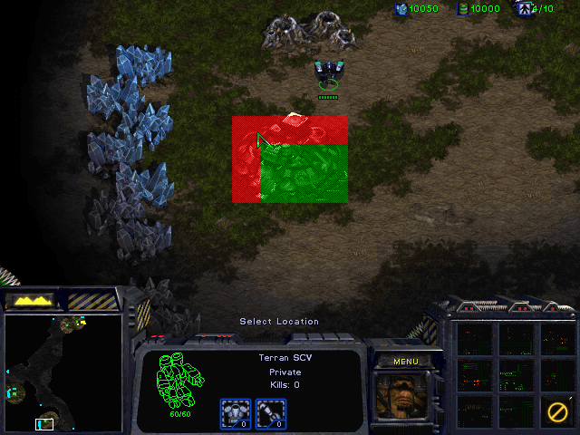Possible Solution
Build along the perpendicular edges

What could be used?
The nearest edge shared by the resources
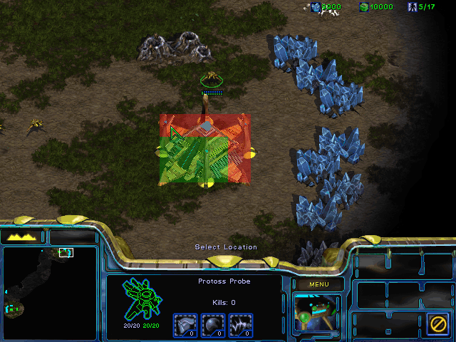How could we find?
The reoccurring positions of a resource's sides
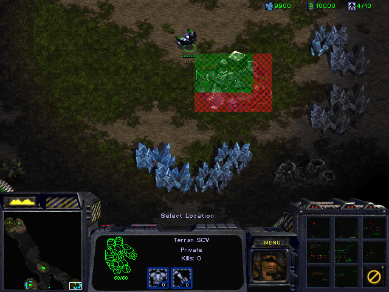Implement/Asses
Python Correct
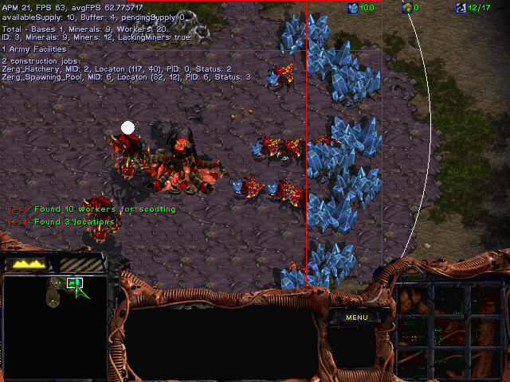 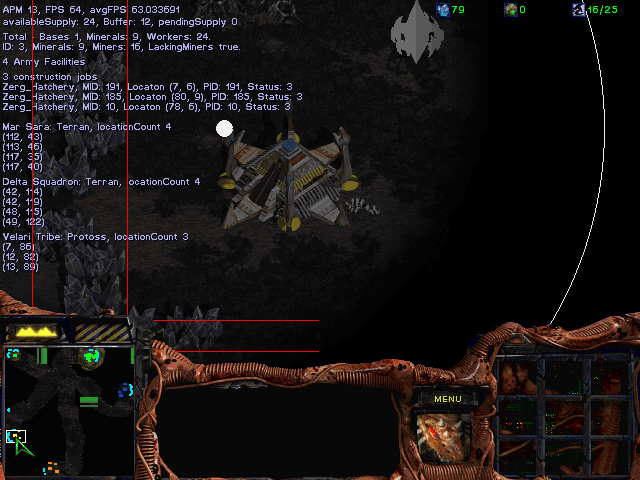 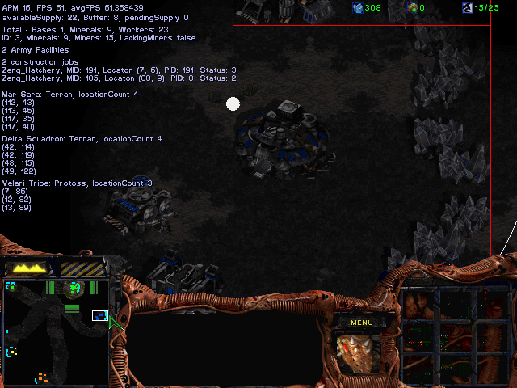 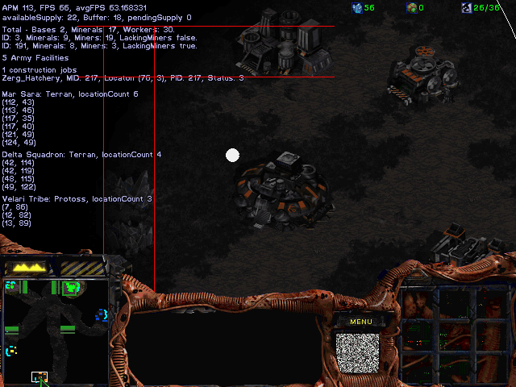Python Wrong


Destination
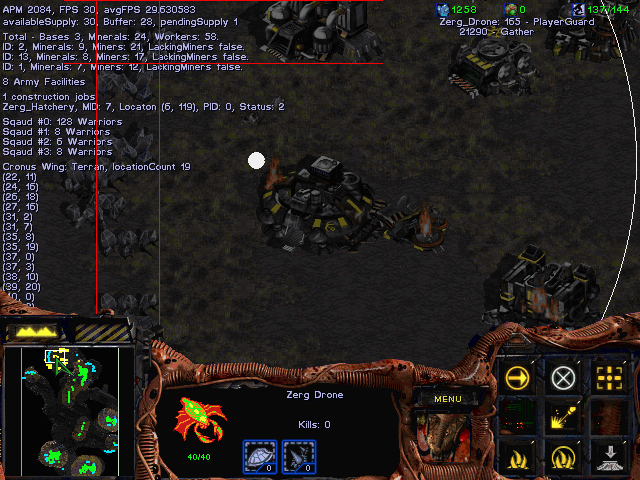 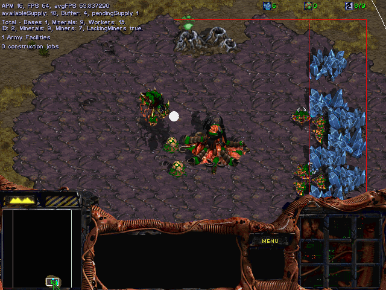 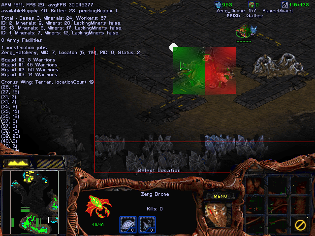 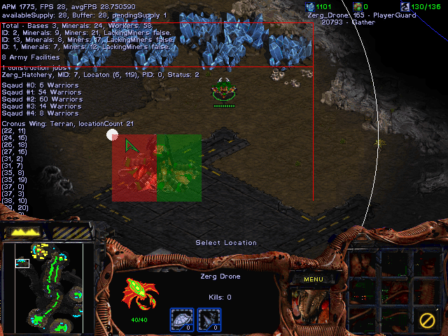We learned
- Defining the problem: Direction
- Modifying and Testing: Misunderstanding
- Devising a solution: Simplify
- Implement/Assess: Improvement
- Finally: Good enough